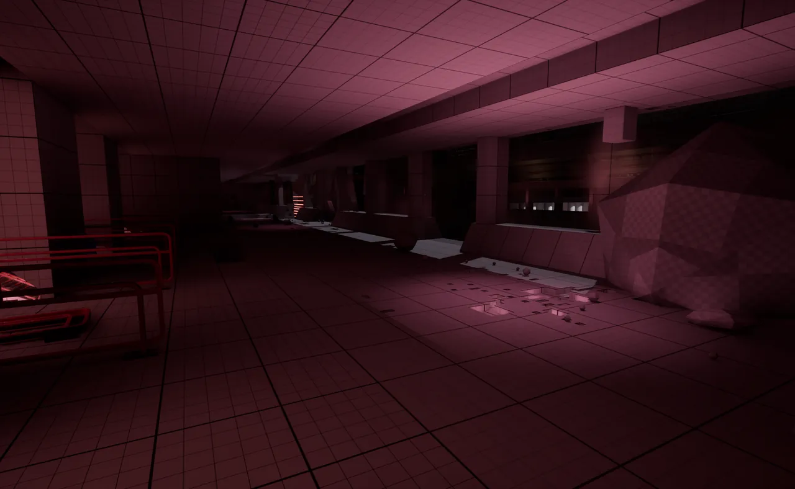
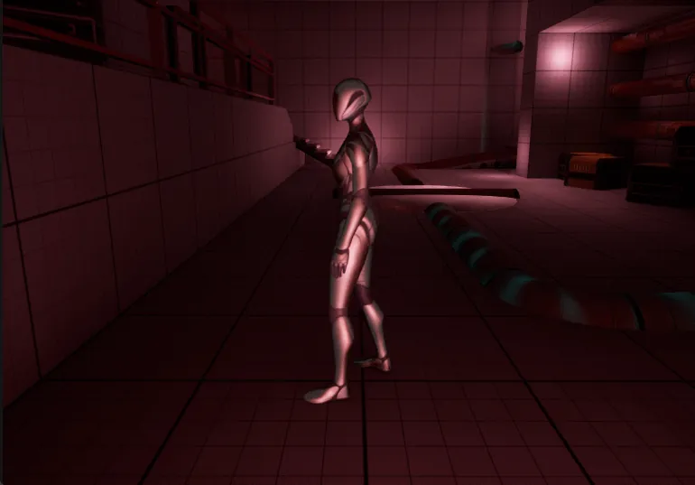

THE LEVEL
Power the ship back up
The player arrives on a seemingly desolate ship, dark and abandoned. As the player progresses, they’ll start to find ways to re-engage power on the ship by manipulating pipes in puzzle encounters around the ship.
As players engage more power systems, they will open doors and create new paths forward, eventually finding out why the ship was abandoned and discovering a way off the doomed ship.